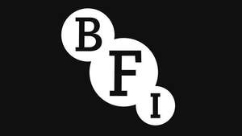

Trade Mark Journal No.2025/021 23 May 2025
UK00004180055 27 March 2025 (9,35,38,41)
Mark 1
Mark 2

- Class 9
- Films; video recordings; audio and audio visual recordings of all kinds; cinema and television films, videotapes, cassettes, tapes, discs, compact discs; publications supplied by electronic means and/or telecommunications; publications supplied using the Internet, Intranet, Extranet or mail servers; publications in electronic form; publications in electronic form supplied on line from databases or from facilities provided on the Internet or other communications networks; electronic magazines, directories, pamphlets, books, periodicals, catalogues, bulletins, guides, manuscripts, newsletters, pictures, paintings, drawings, photographs, artworks and images; digital pictures, paintings, drawings, photographs, artworks and images; web pages (downloadable); downloadable games and quizzes supplied by or played on the Internet; interactive videos, films, tapes, cassettes and compact discs; software and/or firmware to enable procurement of goods and services on line using the Internet or other electronic communications networks; data recorded in electronic, optical or magnetic form; audiovisual recordings; computer accessories; apparatus for recording, transmission or reproduction of sound or images; mechanisms for coin operated apparatus; data processing equipment and computers; films; motion pictures; programmes, news, documentaries, reviews, previews, trailers, and articles for television, cinema, radio and electronic viewing and/or listening recorded in electronic, optical or magnetic form; software to enable uploading, posting, showing, displaying, tagging, blogging, sharing or otherwise providing electronic media or information over the Internet or other communication's networks; application program interface (API) that enables developers to integrate video content and functionality into websites, software applications, or devices; computer software; computer programs; computer hardware; computer firmware; software and/or firmware relating to local and wide area networking; software for modifying the appearance and enabling transmission of music, audio, video, photographs; computer software for the collection, editing, organizing, modifying, transmission, storage and sharing of data and information; computer software for use as an application programming interface (API); application programming interface (API) for computer software which facilitates online services for social networking, building social networking applications and for allowing data retrieval, upload, download, access and management; computer software to enable uploading, downloading, accessing, posting, displaying, tagging, blogging, streaming, linking, sharing or otherwise providing electronic media or information via computer and communication networks; computer software development tools; computer software for use as an application programming interface (API); application programming interface (API) for computer software which facilitates online services for social networking, building social networking applications; application programming interface (API) for allowing data retrieval, upload, download, access and management; computer software to enable uploading, downloading, accessing, posting, displaying, tagging, blogging, streaming, linking, sharing or otherwise providing electronic media or information via computer and communication networks; computer software for searching, compiling, indexing and organizing information on computer networks; computer hardware, computer software for searching, compiling, indexing, and organizing information within individual workstations and personal computers; computer software for creating indexes of information, indexes of web sites and indexes of other information resources; software, firmware and hardware to enable to enable the broadcast of information, data, images and signals; software, firmware and hardware to enable to enable processing, manipulation, and interaction with information, data, images and signals; software, firmware and hardware to enable searching of data, images information sounds and signals; cloud computing software, programmes, hardware and firmware; software and systems enabling online access to data, image and information processing capture and manipulation systems; virtual computer software and systems; software and hardware providing online access and use of computer software; software, programs, hardware and/or firmware for use in or relating to accessing and/or interacting with computer networks, electronic on-line systems, databases, Internet sites, Intranet sites, Extranet sites, web servers, e-commerce servers, mail servers, web pages, electronic and optical storage media, electronic communications networks, and wide area and local area networks; software, firmware and hardware to enable viewing, listening, participating in, and/or interacting with on-line information, data and images, computer software, data and image processing, advertisements, auctions, chat, forums, entertainment, seminars, conferences, trade shows, exhibitions, tournaments and contests; software and/or firmware which assists users to make choices; software and/or firmware which assists users to select one or more items from a database, catalogue, list; software and electronic apparatus to enable connection to databases, the Internet and other communications networks; computer software for communicating via voice, text or videos; telecommunication apparatus (including modems); interactive databases; electronic apparatus and instruments for processing, logging, storing, transmitting, receiving, displaying, searching and/or printing of data, images, information and signals; contact management software; software and/or firmware to enable procurement of goods and services on-line using the Internet or other electronic communications networks; publications supplied by electronic means and/or telecommunications; publications supplied using the Internet, Intranet, Extranet or mail servers; publications in electronic form; publications in electronic form supplied on-line from databases or from facilities provided on the Internet or other communications networks; electronic magazines, directories, pamphlets, books, periodicals, catalogues, bulletins, guides, manuscripts and newsletters; web pages; electronic game software; downloadable electronic games; games and quizzes supplied by or played on the Internet; interactive videos, films, tapes, cassettes and compact discs; data recorded in electronic, optical or magnetic form relating to entertainment, cultural activities, music, cinema, TV, radio, videos, libraries, archives, images, films, entertainment, training, education, theatre, exhibitions, live performances, roadshows, educational and training materials, courses, games, online services, websites; audiovisual recordings; CDs; CD-ROMs; CDIs; DVDs; machine readable media; media for storing pre-recorded information, data and signals relating to entertainment, cultural activities, music, cinema, TV, radio, videos, libraries, archives, images, films, entertainment, training, education, theatre, exhibitions, live performances, roadshows, educational and training materials, courses, games, online services, websites; magnetic, optical and electronic data carriers pre-recorded with information, data and signals relating to entertainment, cultural activities, music, cinema, TV, radio, videos, libraries, archives, images, films, entertainment, training, education, theatre, exhibitions, live performances, roadshows, educational and training materials, courses, games, online services, websites; protective clothing, headgear and footwear; communication apparatus; audio and or visual teaching apparatus; sunglasses; mouse mats; scientific, nautical, surveying, photographic, cinematographic, optical, weighing, measuring, signalling, checking (supervision), life saving and teaching apparatus and instruments; apparatus and instruments for conducting, switching, transforming, accumulating, regulating or controlling electricity; apparatus for recording, transmission or reproduction of sound or images; mechanisms for coin operated apparatus; cash registers; calculating machines, data processing equipment and computers; audio and or visual teaching apparatus; sunglasses; mouse mats; software, firmware and hardware providing access to training, courses and entertainment; telecommunication apparatus (including modems); software and application software for monitoring Internet websites and online publications and directories for specific content and generating reports and alerts in response thereto; downloadable software and application software for monitoring Internet websites and online publications and directories for specific content and generating reports and alerts in response thereto; downloadable electronic information and publications in relation to business, entertainment, sporting, recreational and cultural events and attendees of such events; software which assists in obtaining information about users of websites, electronic communications sites, databases, intranet sites, extranet sites, communications; computer software encoders and decoders; contact management software; fire extinguishing apparatus; downloadable digital chat room platforms, web portals and blog platforms; instruction and user manuals in electronic form relating to the aforesaid; cases, containers, parts and fittings for the aforesaid goods.
- Class 35
- Advertising, publicity, marketing and promotional services; business administration and management services; advertising, publicity, promotion and marketing services for providing electronic media or information over the Internet or other communications networks; distribution of advertising, publicity, promotional and marketing matter materials text data images and information in relation to films, games, entertainment, and streamable and pay per use image video audio and mutlimedia files; provision of space on websites for advertising and promoting goods and services; promoting the goods and services of others by arranging for sponsors to affiliate their goods and services with sports competitions; public relations and publicity services; merchandising; promotion of competitions and events; event marketing; distribution of advertising, publicity, promotional and marketing matter materials text data images and information in relation to games files; advertising, publicity, promotion and marketing services for providing digital and electronic media, data and information over the Internet or other communications networks; production of commercials, advertising and advertising materials; promotion services provided on the Internet and/or other electronic communication networks; the bringing together, for the benefit of others, of a variety of live events and activities, television streaming and download services, provision of non-downloadable image video audio and multimedia files, enabling consumers to conveniently view and purchase those services; the bringing together, for the benefit of others, of a variety of films, entertainment recordings, video audio and data files, enabling customers to conveniently view and purchase those goods; the bringing together for the benefit of others, of a variety of video, audio, data and television streaming services and entertainment services for providing temporally for a fee streamable pay per use and non-downloadable music files, and games enabling customers to conveniently view and purchase those services; the bringing together for the benefit of others, of a variety of video, audio, data and television streaming services and entertainment services for providing temporally for a fee digital media streamable pay per use and non-downloadable via a global communication network, enabling customers to conveniently view and purchase those services; wholesale, retail, electronic shopping retail and mail order retail services in connection with the sale of virtual goods, namely, virtual clothing, virtual films, virtual artwork, virtual entertainment files, virtual tickets, virtual posters, virtual certificates of authentication of pictures films cinema games artwork characters and places, digital collectibles and files authenticated by non-fungible tokens [NFTs], virtual characters and places authenticated by non-fungible tokens [NFTs]; wholesale, retail, electronic shopping retail and mail order retail services in connection with the sale of software providing online virtual, augmented and mixed reality environments; audience rating determination relating to broadcasts; management of broadcast services; design, preparation, production, distribution of materials used for presentations for business purposes in the fields business, marketing, advertising, promotional, financial, accounting, branding, trade show and exhibition, education, entertainment, training, sports, cultural events, conferences, competitions, instruction, courses, publishing, audio and video production; provision and rental of advertising space, time and media; organisation, operation and supervision of loyalty and incentive schemes; customer loyalty services for commercial, promotional and advertising purposes; administration of membership schemes; organisation, arrangement and conducting of competitions and prizes for commercial or advertising purposes; business management of people; commercial administration of the licensing of the goods and services of others; wholesale, retail, electronic shopping retail and mail order retail services in connection with the sale of software, music, images, movies, TV shows, games, music, script readings , films, games, tickets, fireworks, paints, cleaning polishing scouring and abrasive preparations, soaps, perfumery, essential oils, cosmetics, hair lotions, dentifrices, deodorants, toiletries, creams, gels, lotions, foams, talcum powder, shampoos, conditioners, sprays, body paint, deodorants, antiperspirants, body and facial scrubs, breath fresheners, shaving preparations, cosmetics, laundry detergent and fabric conditioners, dyes, boot cream and polish, car cleaning preparations, cushions, tissues, pharmaceutical and veterinary preparations, dietetic substances, plasters and bandages, disinfectants, foods, drinks, beverages, analgesic and muscle strain preparations, first aid kits, building materials, transportable buildings, cables and wires, ironmongery, small items of metal hardware, badges, keyrings, key chains, locks and ornaments, bins, signs, statues, statuettes, figurines, trophies, boxes, cases, bags, handbags, rucksacks, purses, containers, backpacks, holdalls, wallets, purses, belts, cutlery, razors, scissors, tweezers, life-saving and teaching apparatus and instruments, apparatus for recording transmission or reproduction of sound or images, data carriers, data processing equipment, software, digital video and audio devices, telecommunications apparatus, mouse mats, mobile phone accessories, spectacles and sunglasses, PDAs (Personal Digital Assistants), laptop computers, memory cards and sticks, electronic games consoles, screensavers, publications, data processing apparatus, scoreboards, time recording apparatus and instruments, smart cards, apparatus for recording of sound or images, apparatus for transmission and reproduction of sound or images, magnets, helmets, kettles, lighting and installations, lampshades, torches, vehicles, bicycles, jewellery, clocks, watches, trophies, ornaments, badges, brooches, tie clips, pins, cuff links, medals, medallions, coins, identity tags and bracelets, fobs, musical instruments, horns, clackers, paper, cardboard, printed matter, photographs, instructional and teaching material, plastic materials, packaging, labels, cards, notepads, stickers, posters, pictures, prints, albums, publications, newspapers, magazines, programs, book markers, flags, pennants, sport kits, calendars, beer mats, files, folders and folios, personal organisers, address books, diaries, autograph books, wrap, gift vouchers, stamps, table mats, trunks, travelling bags, umbrellas, walking sticks, furniture, pillows and cushions, sleeping bags, household and kitchen utensils and containers, combs, sponges, brushes, glass, glassware, porcelain, earthenware, toothbrushes, domestic utensils and containers, lunch boxes, flasks, mugs, chinaware, cups, cloths, bottles, flasks, rope, string, nets, tents, awnings, tarpaulins, sacks, padding, stuffing materials, table covers, textiles, mats, linen, towels, bedding, bed sheets, pillow cases, blankets, duvet covers, curtains, handkerchiefs, tea towels, textile wall hangings, flags, pennants, banners, napkins and tablecloths, table place mats, table mats, clothing, footwear, headgear, track suits, shirts, sweatshirts/sweaters, t-shirts, shorts, tops, skirts, trousers, socks, gloves, ties, scarves, bibs, anoraks, jackets, rainwear, dressing gowns, pyjamas, underclothing, shorts, boots, braces, wrist bands, swimwear, sport clothing footwear and headgear, lace and embroidery, ribbons and braid, buttons, badges, buckles, prize ribbons, belt buckles, carpets, rugs, mats and matting, floor covering, wall hangings, wallpaper, artificial grass, games and playthings, gymnastic and sporting articles, games equipment, jigsaws, amusement apparatus, kites, shin guards, gloves, tapes for wrapping racquet and bat handle grips, action figure toys, sports balls, hands in the nature of novelties, outdoor rebound walls in the nature of playthings and sporting articles; wholesale, retail, electronic shopping retail and mail order retail services in connection with the sale of online subscriptions to access musical performances, live entertainment events, concerts, sporting events, comedy, theatre, carnivals, festivals, script readings; wholesale, retail, electronic shopping retail and mail order retail services in connection with the sale of subscriptions to digital musical performances, live entertainment events, concerts, sporting events, comedy, theatre, carnivals, festivals, script readings; the bringing together for the benefit of others of marketing, publicity, staging, management, administration, recording, publishing, broadcasting, communications, ticketing, education, entertainment, archiving and operation services relating to musical performances, live entertainment events, concerts, sporting events, comedy, theatre, carnivals, festivals, script readings, enabling customers to conveniently view and purchase those services ; the bringing together, for the benefit of others, of a variety of service providers enabling consumers to conveniently view and choose those services, being advertising, marketing, promotion, business management, business advice, accountancy, finance, insurance, real estate affairs, repair, maintenance and installation, travel arrangement, travel booking, entertainment, education, training, courses, events, sporting and cultural activities, design, broadcasting, hosting, providing food and drink, legal services, security services for the protection of property and individuals, personal and social services rendered by others, telecommunications, chat room services, bloggs and forums, providing user access to the Internet, operating of search engines, transport, packaging and storage of goods, hygienic and beauty care, travel information, treatment of materials, publishing, installation maintenance and repair of digital hardware and software, design drawing and commissioned writing, creating, writing and compilation of web sites, hosting the web sites, restaurant bar and catering services, provision of accommodation, booking/reservation services, medical services, pharmacy advice, design services, audience rating determination; digital indexing, archiving and retrieval of business information, promotional information, data and images; database and data processing services; updating and maintenance of data in databases; data analysis; compilation, systemisation, transcription, management and publishing of information, data and images into digital databases; digitalised file management; collection and processing services for data; administrative services, namely collection of data in the fields of business, advertising, marketing and finance; data capture services; collection, processing and distribution services for data, images and electronic messages; compilation of statistics; organisation of events for commercial and advertising purposes; opinion polling; data processing; provision of business information; consultancy regarding public relations communications strategy; commercial information agency services; commercial information and advice for consumers; negotiation of business contracts for others; news clipping services; publication of publicity texts; radio advertising; rental of advertising space; rental of advertising time on communication media; sales promotion for others; sponsorship search; arranging of competitions for advertising purposes; all of the aforesaid also provided via mobile apps and via digital communications networks; information, advisory and consultancy services relating to all of the aforesaid services.
- Class 38
- Broadcasting; communications and telecommunications; transmission of radio and television programmes; data transmission; transmission of messages, sound and images; receiving and exchange of information, messages, images and data; text services; news agency services; message sending; communications for access to a database; provision and display of information from a computer stored databank; electronic display of information, messages, images and data; electronic transmission storage and retrieval of information, data, signals, software and programs; providing transmission services for storage and retrieval of information, data and signals over communication networks and computers; electronic information and data interchange services; transmission and distribution on line of computer software, data, signals, images and sound; data and voice communications; electronic mail services; communication of computer programs; transmission and streaming of data and information; electronic exchange and interchange of data and information; electronic data communications; data transfer; data broadcasting; data interconnection services; providing access to databases; provision of data relating to telecommunications; provision of access to social networking services, broadcasting, transmission, communications systems and apparatus, and communications services; providing access to web browser services; providing information about communication and broadcasting by electronic media; providing access to websites and electronic pages; providing user access to the Internet and other electronic networks and databases; telecommunication gateway services; providing access to on line information and communication services; providing access to travel information online; providing access to information relating to travel utilising electronic communications networks; providing access to travel information online; providing access to an online marketplace for obtaining entertainment, educational and cultural services; providing access to secure communications systems; providing secure exchange and transmission of data, signals, images and sound; providing secure data and information transmission including to storage centres; providing e mail services; providing bulletin board services; providing access to systems for encryption and/or encoding and transmission of information, data and signals; providing access to systems for translation of transmitted data; transmission of information relating to goods and services; online broadcasting over the Internet and other electronic communications networks; providing electronic message alerts via the Internet or mobile telephone notifying individuals and businesses of information and data on customer-specified topics and events posted on the Internet or in other on-line directories; electronic mail services; provision of access to internet chat rooms, web portals and blogs; providing on-line chat rooms for social networking; information, advice and consultancy in relation to all the aforesaid services; providing user access to a global computer network; audio, video and multimedia broadcasting via the Internet and other communications networks; webcasting services; transmission of messages, data and content via the Internet and other communications networks; providing forums and chat rooms for the transmission of messages, comments and multimedia content among users in the field of general interest via the Internet and other communications networks; providing access to a video and music sharing portal; transmission of electronic media, multimedia content, videos, movies, pictures, images, text, photos, user-generated content, audio content, and information via the Internet and other communications networks; providing access to community forums for users to post, search, watch, share, critique, rate, and comment on, videos and other multimedia content via the Internet and other communications networks; broadcasting, namely uploading, posting, showing, displaying, tagging, blogging, sharing or otherwise providing electronic media or information over the Internet or other communication's networks; providing access to online forums, chat rooms, journals, blogs, and list servers for the transmission of messages, comments and multimedia content among users; transmission of electronic media, multimedia content, videos, movies, music, audio, pictures, images, text, photos, games, user-generated content, audio content, and information via the Internet and other computer and communications networks; providing access to online community forums for users to post, search, watch, share, critique, rate, and comment on, videos, music, audio and multimedia content; providing digital program transmission of audio and video broadcasts over a global computer network; providing access to a video, music and audio sharing portal for entertainment and education purposes; video and audio broadcasting services featuring music, culture and entertainment; streaming of audio and video materials on the Internet; providing access to interactive communication services (blogs); providing Internet chatrooms; electronic transmission of data, messages, graphics, images and information; peer-to-peer music, audio, video, photo sharing services in the nature of transmission services; electronic transmission of digital music, audio, video, photo files among internet users; providing access to computer, electronic and online databases; providing online forums for communication on topics of general interest; providing online communications links which transfer web site users to other local and global web pages; providing online chat rooms and electronic bulletin boards; broadcasting services over computer or other communication networks namely, uploading, posting, displaying, tagging, and electronically transmitting data, information, messages, graphics, and images; music, audio, video, photo and data sharing services in the nature of transmission services; electronic transmission of digital music, audio, video, photo files, audio visual content and data among internet and mobile device users; music, audio, video and photo sharing services, namely, electronic transmission of digital music, audio, video and photo files, videos and audio visual content among internet users; telecommunications services, namely, electronic transmission of images, audio-visual and video content, photographs, videos, data, text, messages, advertisements, media advertising communications and information; peer-to-peer network computer services, namely, electronic transmission of images, audio-visual and video content, photographs, videos, data, text, messages, advertisements, media advertising communications and information; providing access to computer, electronic and online databases; providing online forums for communication, namely, transmission on topics of general interest; providing email and instant messaging services; chatroom services for social networking; providing online communications links which transfer web site users to other local and global web pages; providing multiple user access to proprietary collections of information by means of global computer information networks; delivery of audio, video, and multimedia content by means of global computer and communication networks; providing multiple-user access to a global computer information network; providing online forums, chat rooms and electronic bulletin boards for transmission of messages among users in the fields of social, educational, political, cultural, and general interest; providing telecommunications connections to a global computer network; telecommunication of information (including web pages), electronic mail services; bulletin board services and chat room services provided over electronic communications networks; providing online access to news reports; online broadcasting over the Internet and other electronic communications networks; providing access to communications utilising the Internet and other electronic communications networks; electronic mail services; computer aided transmission of messages and images; providing access to bulletin boards, special interest forums and chat rooms utilising electronic communications networks; electronic meeting room services for communications between users; providing online chat rooms for registered users for transmission of messages concerning virtual community and social networking; providing access to social networking websites; message sending; providing access to websites of third parties; telecommunication gateway services; providing user access to the Internet; communications services, namely, email services; communications access services, namely, providing user bandwidth and dedicated access to the Internet to enable electronic access to computer software, Internet websites, Internet web software applications, electronic databases, software, data processing, data manipulation, data searching, digital content, and business computer software applications of others accessible via communications networks, online or via the Internet; providing electronic access to computer software, Internet websites, Internet web software applications, electronic databases, software, data processing, data manipulation, data searching, digital content, and business computer software applications of others accessible via communications networks, online or via the Internet; electronic transmission of information, data, images, signals, software and programs; dissemination of information, data, images and signals via Internet and other communications networks; electronic information and data interchange services; transmission and distribution on-line of data, signals, images and sound; communication of information (including web pages) and other data; providing access to on-line information and communication services; providing for a fee access to one or more databases containing information; providing access via a communications network to software, data, images and information, capture systems; providing for a fee access to one or more databases containing information; providing access via a communications network to software, data, images and information, processing and manipulation systems; providing electronic access to virtual computer systems and virtual computer environments; providing access to cloud computing; providing access to an online marketplace for obtaining entertainment, education, goods and services; providing bulletin board services, chat room and chat-line services; managing and organising the aforesaid services; providing the aforesaid services using the Internet and other electronic communications networks; communications utilising the Internet and other communication networks; providing the aforesaid services using the Internet and other electronic communications networks; transmission of chat rooms, web portals and blogs relating to entertainment, film and games via the Internet; information supplied on the Internet or other electronic communications networks relating to the aforesaid services; consultation and information relating to the aforesaid services.
- Class 41
- Education; providing of training; entertainment; sporting and cultural activities; production, distribution and exhibition of films, cinema, television programs, videos, compact discs and audio and audio visual recordings of all kinds and radio; creation, production and distribution of films; creation, production and distribution of programmes for distribution over the Internet and other electronic communications networks; provision of public events relating to films and television; educational services relating to films and television; library and archive services; entertainment; education; instruction tuition and training; entertainment by means of or relating to film, radio and television; production, presentation and rental of television and radio programmes and of films and sound and video recordings; production and rental of educational and instructional materials; entertainment in the form of film, video, live performances, concerts, theatre productions, stage plays, shows and roadshows; entertainment utilising electronic communications systems; production and presentation of films, videos, audio and visual recordings, live performances, stage plays, shows and concerts; organisation of competitions, fun days and sporting events; orchestra and library services; musical entertainment; language teaching; provision of language schools and courses; entertainment, education, cultural activities and training provided on line from a computer, the Internet or other electronic networks; provision and organisation of courses, training, instruction and education; providing training using the Internet and other electronic communications networks; providing games; publication services; providing on line electronic publications; publication of electronic books and journals; publishing printed and electronic catalogues, directories, magazines, newsletters, guides, books, bulletins and other materials; provision of information relating to entertainment, life styles, education, games, activities, gambling, contests and events; providing and organising entertainment events and activities; publication of materials for access from databases, the Internet or other electronic communication networks; publication of calendars of events; dissemination of publications; organising and providing electronic publications online and digitally relating to games, education, life styles, housing, activities, gambling, including via a database; creation, production and distribution of programmes; providing information via interactive databases relating to entertainment, education, games, activities, gambling, contests and events; entertainment, education, games, activities, gambling, contests and events using the Internet, electronic communications networks, and/or telephone; providing cultural activities; organising and conducting seminars, exhibitions, conferences, symposiums, seminars, congresses, trade shows and workshops; organising, maintaining and providing to third parties entertainment, education, games, activities, gambling, contests and events; amusements; booking of tickets for entertainment and sports events; educational services; entertainment services; providing of training; sporting and cultural activities; entertainment services provided via internet and electronic communications sites; education services provided via internet and electronic communications sites; entertainment and educational services featuring electronic media, multimedia content, videos, movies, pictures, music, film, images, text, photos, user-generated content, audio content, and related information via the Internet and other communications networks; provision of entertainment information via blogs featuring information in the field of electronic media, multimedia content, videos, movies, pictures, images, text, photos, user-generated content, audio content, and related information; digital video, audio and multimedia entertainment publishing services; online digital publishing services; entertainment services, namely, conducting contests; entertainment services, namely, providing music, film, culture and entertainment via a website; providing entertainment and music, film, culture information, via a website; providing blogs and non-downloadable publications in the nature of articles in the fields of music, film, culture and entertainment, via a website; entertainment services, namely, providing podcasts in the fields of music, film, culture and entertainment; digital video, audio, and multimedia publishing services; entertainment services, namely, providing pre-recorded audiovisual content in the field of music, film, culture and entertainment via a global communications network; production and distribution of audio-visual entertainment in the nature of videos featuring music, film, culture and entertainment; providing entertainment information and data, including in relation to the fields of social and community interest groups via computer, electronic and online databases; provision of online electronic journals and web logs featuring user generated or specified content; electronic publishing services for others; publishing electronic journals and web logs, featuring user generated or specified content; arranging and conducting educational conferences; providing information regarding education and training in software and software development matters from searchable indexes and databases of information, including text, electronic documents, databases, graphics and audio visual information, on computer and communication networks; information relating to entertainment, courses, programmes, education, games, culture, leisure, activities, sports activities, concerts, competitions, contests and events; creation, production and distribution of television, radio, programmes, films, movies, motion pictures, previews, trailers and documentaries; creation, production and distribution of programmes for distribution over the Internet and other electronic communications networks; publication of materials for access from databases, the Internet or other electronic communication networks; publication services; education and entertainment services for providing electronic media or information over the Internet or other communications network; organising and providing on-line electronic publications; publication of printed and electronic catalogues, directories, magazines, newsletters, guides, books, journals, bulletins and other materials; provision and organisation of courses, training, instruction and education; training others to use computer software platforms for creating, managing, and deploying cloud computing infrastructure services; training government entities and large companies to use computer software platforms for creating, managing, and deploying cloud computing infrastructure services, such infrastructure services to be provided in the data centers of the government entities and large companies; education, courses, cultural activities, training and entertainment provided on-line from a computer, the Internet or other electronic networks; provision and organisation of courses, training, instruction and education; education and training services relating to websites, electronic communications sites, databases, intranet sites, extranet sites, information technology, computers, communications, management, leadership, client relationship management, searching of data and information, gaining customer insight, increasing sales, reducing support costs and increasing customer satisfaction; providing courses relating to websites, electronic communications sites, databases, intranet sites, extranet sites, communications, management, leadership, client relationship management, searching of data and information, gaining customer insight, increasing sales, reducing support costs and increasing customer satisfaction; providing games; publication services; providing on-line electronic publications; publication of electronic books and journals; publishing printed and electronic catalogues, directories, magazines, newsletters, guides, books, bulletins and other materials; provision of information relating to entertainment, life styles, education, games, activities, gambling, contests and events; providing and organising entertainment events and activities; publication of materials for access from databases, the Internet or other electronic communication networks; publication of calendars of events; creation, production and distribution of programmes for distribution over the Internet and other electronic communications networks; providing information in interactive databases relating to entertainment, education, games, activities, gambling, contests and events; entertainment, education, games, activities, gambling, contests and events using the Internet, electronic communications networks, and/or telephone; entertainment and education services relating to games, activities, gambling, life styles, housing, contests and events; providing cultural activities; organising quizzes; organising and conducting seminars, exhibitions and conferences; organising, maintaining and providing to third parties entertainment, education, games, activities, gambling, contests and events; amusements; arranging and conducting symposiums, seminars, congresses, conferences, trade shows and workshops; creation, production and distribution of radio and television programmes; creation, production and distribution of films; creation, production and distribution of programmes for distribution over the Internet and other electronic communications networks; film production services; educational services; entertainment services; providing of training and courses; music, film, dance, sporting and cultural activities; entertainment by or relating to television and radio; production and presentation of television, radio and digital media programmes; script writing; entertainment relating to games, film, music and dance; providing competitions, quizzes, television appearances and audience participation events; gambling and gaming services; organisation and presentation of competitions, games, quizzes, fun events and audience participation events; organisation, production and presentation of shows and live performances; amusements; games and entertainment services provided online from a computer network; information and advisory services relating to the aforesaid services; instruction services; providing the aforesaid services using the Internet and other electronic communications networks; information supplied on the Internet or other electronic communications networks relating to the aforesaid services; providing entertainment, education and training services via chat rooms and chat lines; providing entertainment, education and training services via chat lines and quizzes; consultation and information relating to the aforesaid services; provision of information relating to education, entertainment, training, sports, cultural activities, conferences, competitions, instruction, courses, publishing, audio and video production, photography, publishing, presentations of others; providing non-downloadable and streamable games and quizzes supplied by or played on the Internet; providing non-downloadable and streamable electronic games; provision of entertainment, film and games via Internet chat rooms, web portals and blogs; provision of information and data relating to entertainment, film and games via Internet chat rooms, web portals and blogs; entertainment education and training services provided via non-downloadable and streamable digital chat room platforms, web portals and blog forums; providing non-downloadable and streamable videos and music via a digital portal; entertainment, education and training services provided via non-downloadable online community forums for users to post, search, watch, share, critique, rate, and comment on, videos and other entertainment multimedia content via the Internet and other communications networks; entertainment, education and training services provided via non-downloadable online community forums for users to post, search, watch, share, critique, rate, and comment on, videos, music, audio and entertainment multimedia content; distribution of entertainment audio and video broadcasts over a global computer network; ticket reservation and booking services relating to musical performances, live entertainment events, concerts, sporting events, comedy, theatre, carnivals, festivals, script readings; booking agencies for musical performances, live entertainment events, concerts, sporting events, comedy, theatre, carnivals, festivals, script readings tickets.
British Film Institute
Representative: Ipulse - David Rickard